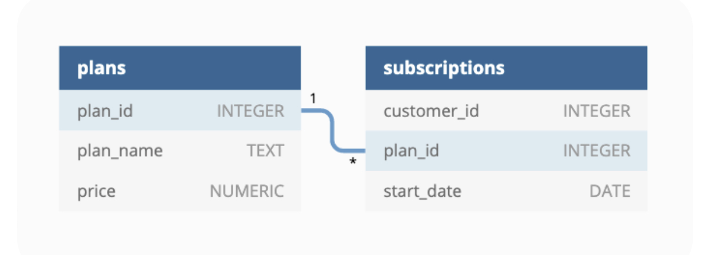

Using subscription style digital data to answer important business questions.
Entity Relationship Diagram

Database Connection
First, I’ll create a connection to my local postgres database thanks to the RPostgres package.
# | warning: false# Creating a connection to my local postgres databaselibrary(RPostgres)con <-dbConnect(Postgres(),dbname ="foodie_fi",user ="postgres",password = my_password)
4. What is the customer count and percentage of customers who have churned rounded to 1 decimal place?
with cte1 as (select1asid,count(customer_id)::numericas wholefrom subscriptions),cte2 as (select1asid,count(customer_id)::numericas partfrom subscriptionswhere plan_id =4)SELECT cte1.whole as total_customers,round(cte2.part / cte1.whole, 2) *100as pct_churnedfrom cte1naturaljoin cte2;
1 records
total_customers
pct_churned
2650
12
5. How many customers have churned straight after their initial free trial? what percentage is this rounded to the nearest whole number?
with cte as (-- using the lead window function to find the-- preceding row to a particular rowselect*,lead(plan_id) over(partitionby customer_id) as lead_plan_idfrom subscriptionsorderby customer_id, plan_id),cte2 as (-- getting rows whose values satisfy the condition in the questionselect*from ctewhere plan_id =0and lead_plan_id =4) -- solutionselectcount(*) as count_of_customers_who_churned_after_free_trialfrom cte2
1 records
count_of_customers_who_churned_after_free_trial
92
6. What is the number and percentage of customer plans after their initial free trial?
with cte1 as (select1asid,count(customer_id)::numericas wholefrom subscriptions),cte2 as (select1asid,count(customer_id)::numericas partfrom subscriptionswhere plan_id <>0)SELECT cte2.part as customer_count_after_trial_plan,round(cte2.part / cte1.whole, 2) *100as pct_ccatpfrom cte1naturaljoin cte2;
1 records
customer_count_after_trial_plan
pct_ccatp
1650
62
7. How many customers have upgraded to an annual plan in 2020?
with cte1 as (-- using the lead window function to find the-- preceding row to a particular rowselect*,lead(plan_id) over(partitionby customer_id) as lead_plan_idfrom subscriptionsorderby customer_id, plan_id),-- filtering to only annual planscte2 as (select*, lead_plan_id - plan_id as difffrom cte1where lead_plan_id =3) -- excluding churned customers and unupgraded plansselectcount(DISTINCT customer_id) as upgraded_customers_2020_countfrom cte2where (diff >0)and (lead_plan_id <>4)andEXTRACT(yearfrom start_date ) =2020;
1 records
upgraded_customers_2020_count
253
8. How many days on average does it take for a customer to upgrade to an annual plan from the – day they join Foodie-Fi?
with cte1 as (select*,max(plan_id) over (partitionby customer_id) as highest_plan_suscribed,max(start_date) over (partitionby customer_id) as date_of_hps,min(start_date) over (partitionby customer_id) as date_of_lps,row_number() over (partitionby customer_id) as snfrom subscriptionsorderby customer_id, start_date, plan_id),cte2 as(select*, date_of_hps - date_of_lps as diff_in_daysfrom cte1where highest_plan_suscribed =3and sn =1)selectround(avg(diff_in_days)::numeric, 2) as avg_days_to_upgrade_to_annualfrom cte2
1 records
avg_days_to_upgrade_to_annual
105.95
9. How many customers downgraded from a pro monthly to a basic monthly plan in 2020?
with cte1 as(select*,lead(plan_id) over(partitionby customer_id) as lead_plan_idfrom subscriptionsorderby customer_id, start_date, plan_id ), cte2 as (select customer_id, plan_id, lead_plan_id, start_datefrom cte1where plan_id =2and lead_plan_id =1andEXTRACT(yearfrom start_date ) =2020 )selectcount(*) as number_of_customers_downgrade_from_prom_basmfrom cte2